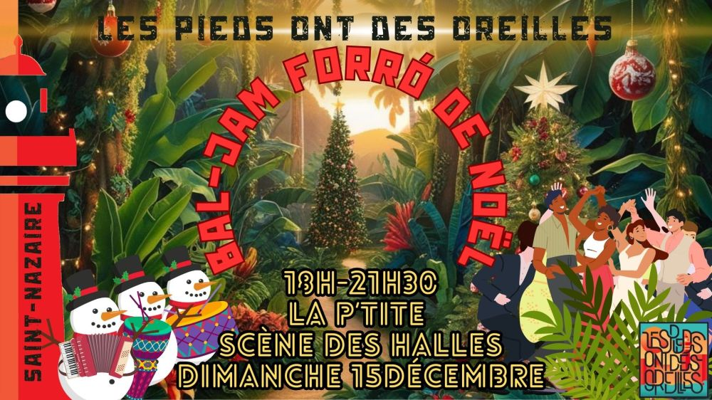

Bal-Jam forró de Noël

Notre traditionnelle bal-jam de Noël est de retour 🤩
Danseu.r.se.s, apportez vos gambettes, ça va swinguer 🕺💃
Musicien.ne.s, apportez vos instruments, c’est une jam-session 🥁🪗 Contactez-nous si vous avez des forró à jouer, qu’on les ajoute au répertoire de la soirée !
REPERTOIRE:
https://docs.google.com/spreadsheets/d/1GnoftF_-2al9jQm5XdcdmhBjXY9RzWxwzVJgcIaTsTI/edit?usp=sharing
Contact: 07 63 47 55 85 / 06 60 40 15 17
Participation libre au chapeau (autour de 6€ conseillé).
Vidéos
Les vidéos sont hébergées par YouTube. Elles ne se chargent, et YouTube n'est contacté, qu'au moment où vous cliquez sur lecture.